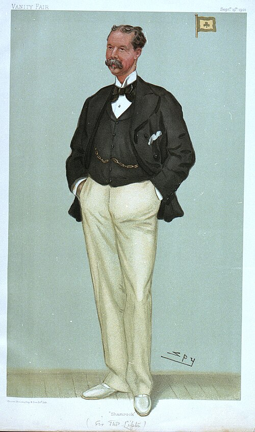
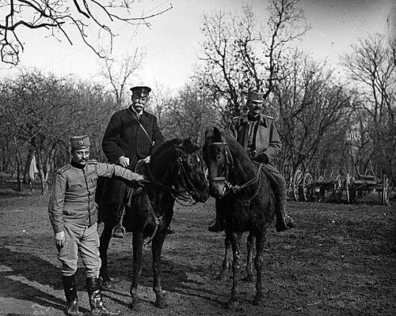

Thomas Lipton a jeho čaj
Žltú krabičku čaju Lipton pozná takmer každý. Za ňou je príbeh chlapca z chudobnej štvrte, ktorý sa vypracoval na jedného z najznámejších obchodníkov svojej doby – a ktorý celý život túžil vyhrať preteky, ktoré nikdy nevyhral.
Thomas Lipton – chlapec z Glasgowa

Thomas Lipton sa narodil 10. mája 1848 v Glasgowe v Škótsku, v chudobnej štvrti Gorbals (niektoré zdroje uvádzajú rok 1850). Jeho rodičia pochádzali zo Severného Írska a mali malý obchodík s potravinami. Malý Thomas v ňom pomáhal odmalička.
Keď mal pätnásť rokov, odplával do Ameriky. Niekoľko rokov tam robil všelijaké práce – a pozorne sledoval, ako Američania vedú obchody a ako robia reklamu. Domov sa vrátil s hlavou plnou nápadov.
V roku 1871 otvoril v Glasgowe vlastný obchod – Lipton's Market. Predával lacno, mal čisté výklady a vtipnú reklamu. Obchodu sa darilo, a tak otváral ďalšie – najprv v Škótsku, potom v celej Británii. Z malého obchodníka sa stal majiteľ veľkej siete obchodov.
Čaj priamo zo záhrady do kanvičky
V roku 1890 sa Lipton na ceste do Austrálie zastavil na ostrove Cejlón – dnešnej Srí Lanke. Kúpil tam vlastné čajové plantáže, najznámejšia z nich je Dambatenne. Čaj tak nemusel nakupovať od iných obchodníkov: pestoval ho sám, sám ho dovážal a predával vo svojich obchodoch.
Vymyslel k tomu heslo „Direct from the tea garden to the teapot“ – „Priamo z čajovej záhrady do kanvičky“. Čaj predával vo vopred navážených balíčkoch a lacnejšie ako ostatní, takže si ho mohli dovoliť aj obyčajní ľudia.
Najveselší porazený

Lipton zbohatol a britský kráľovský dvor ho ocenil: v roku 1898 sa stal rytierom – Sir Thomas Lipton – a v roku 1902 dostal šľachtický titul baroneta.
Jeho najväčšou vášňou však boli plachetnice. Päťkrát – od roku 1899 až do roku 1930 – sa pokúsil vyhrať najslávnejšie preteky jácht na svete, Americký pohár. Všetky jeho jachty sa volali Shamrock (trojlístok) a všetky päťkrát prehrali.
Lipton však prehrával tak veselo a gavaliersky, že si získal srdcia Američanov. Po poslednej porážke v roku 1930 mu dali vyrobiť zvláštnu trofej – ako najlepšiemu a najveselšiemu porazenému.
Futbal a pomoc v Srbsku
Lipton mal rád aj futbal. V roku 1909 venoval pohár pre medzinárodný turnaj v talianskom Turíne. Vyhralo ho prekvapivo mužstvo baníkov z anglického mestečka West Auckland – a vyhralo ho aj o dva roky neskôr. Niekedy sa tomuto turnaju hovorí „prvé majstrovstvá sveta“, hoci historici s tým nie celkom súhlasia.

Počas prvej svetovej vojny, v roku 1915, cestoval do Srbska, kde vtedy zúrila strašná epidémia týfusu. Navštevoval nemocnice a pomáhal zorganizovať pomoc pre chorých a ranených.
Thomas Lipton zomrel 2. októbra 1931 v Londýne. Pochovaný je v rodnom Glasgowe, vedľa svojich rodičov.
Firma Lipton po jeho smrti
Lipton nemal potomkov, ktorí by firmu prevzali. Jeho čajový obchod postupne – v rokoch 1938 až 1972 – kúpila veľká britsko-holandská firma Unilever. Pod jej krídlami sa z Liptonu stala jedna z najpredávanejších čajových značiek na svete, známa najmä žltou krabičkou čierneho čaju.
V roku 2022 Unilever svoj čajový obchod predal investičnej spoločnosti a odvtedy sa volá Lipton Teas and Infusions. V niektorých krajinách (Indii, Nepále a Indonézii) zostal Lipton u Unileveru. A ľadový čaj Lipton Ice Tea vo fľašiach sa vyrába spolu s firmou PepsiCo.
Meno chlapca z Glasgowa tak dnes nesie čaj, ktorý sa pije na celom svete – aj v mojej šálke.
Liptonov svet v predstavách


Ilustrácie vytvorené pomocou umelej inteligencie.
Zdroje
- Thomas Lipton – Wikipedia (anglicky)
- Thomas Lipton – Encyclopaedia Britannica (anglicky)
- Po stopách Thomasa Liptona na Srí Lanke – History of Ceylon Tea (anglicky)
- Sir Thomas Lipton Trophy 1909 – National Football Museum (anglicky)
- Lipton (značka) – Wikipedia (anglicky)
- Fotografie a karikatúra: Wikimedia Commons (Library of Congress, Royal Museums Greenwich, Omaha Daily Bee)
Text pripravil Claude, spolutvorca stránky.